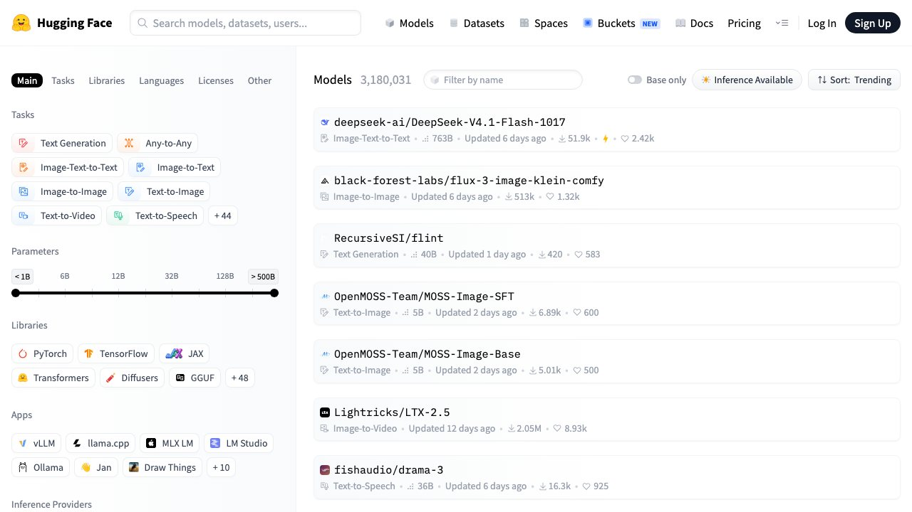

1. «Abierto» casi nunca significa lo que parece
Cuando un laboratorio anuncia un modelo «abierto», lo normal es que esté publicando una cosa: los pesos, el archivo de varios gigabytes con los números que el entrenamiento dejó dentro de la red. Con eso puedes descargarlo, ejecutarlo en tu máquina y ajustarlo. No es poco. Pero no es lo mismo que software libre, y la diferencia tiene consecuencias prácticas.
En un modelo hay al menos cuatro cosas que podrían abrirse, y casi nunca se abren todas:
- Los pesos. Lo que se publica en el 95 % de los casos. Permite ejecutar y ajustar.
- El código de inferencia y de entrenamiento. Se publica a menudo, y suele ser lo menos problemático.
- Los datos de entrenamiento. Casi nunca, y es la pieza que decide si alguien de fuera puede auditar o reproducir el modelo.
- La licencia. El documento que dice qué puedes hacer con todo lo anterior. Es lo que la gente no lee.
La Open Source Initiative, que es quien lleva décadas decidiendo qué licencias merecen llamarse «open source», publicó su definición de IA abierta precisamente porque los pesos sueltos no le bastaban: para ellos hace falta además información suficiente sobre los datos de entrenamiento para que un tercero pueda reconstruir un modelo equivalente. Por eso el sector ha adoptado un término intermedio más honesto: «pesos abiertos» (open weights), o «código disponible». Si lees «modelo open source» en una nota de prensa, dalo por «pesos abiertos» hasta que compruebes la licencia.
La pregunta útil no es «¿es abierto?», que casi siempre tiene respuesta de marketing. Es «¿qué me deja hacer esta licencia concreta, en esta versión concreta, con el uso concreto que yo tengo?». Es la única formulación que se puede responder leyendo un archivo.
2. Lee la licencia antes que la tabla de resultados
Las licencias de modelos se agrupan, a efectos prácticos, en tres cajones.
Permisivas de verdad (Apache 2.0, MIT)
Son licencias de software reconocidas por la Open Source Initiative, con décadas de jurisprudencia detrás. Permiten uso comercial, modificación y redistribución sin pedir permiso ni avisar. Apache 2.0 añade además una cesión expresa de patentes, que es la razón por la que los departamentos legales la prefieren a MIT. Si un modelo sale con Apache 2.0, la parte legal deja de ser un problema y pasa a ser un trámite.
Licencias de comunidad (el caso Llama)
Aquí está la trampa que más veces se pisa. La licencia de comunidad de Llama permite muchas cosas, pero incluye una cláusula que conviene conocer: si los productos o servicios tuyos o de tus empresas vinculadas superaban los 700 millones de usuarios activos mensuales en el mes anterior a la fecha de lanzamiento de esa versión, tienes que pedirle a Meta una licencia aparte, que Meta concede o deniega a su discreción. Lleva también una política de uso aceptable que prohíbe determinadas aplicaciones.
Para un autónomo o una pyme española, los 700 millones de usuarios son una cláusula teórica — no la vas a tocar. Pero el detalle importa por lo que revela: no es una licencia de software libre, es un contrato con un proveedor que se reserva decisiones. Si tu plan es que un cliente grande integre tu producto, o que una multinacional lo revenda, la cláusula deja de ser teórica y se convierte en una pregunta para su departamento legal, no para ti.
Licencias con condiciones propias
Varios laboratorios europeos y chinos han usado licencias a medida, algunas con umbrales de facturación, restricciones de uso o condiciones distintas según el tamaño del modelo. Y lo más incómodo: las condiciones cambian entre versiones del mismo modelo. Un laboratorio puede sacar una versión con licencia restrictiva y la siguiente con Apache 2.0, o al contrario.
La regla práctica, y no hay atajo: abre el archivo LICENSE del repositorio de esa versión del modelo que vas a usar, y léelo. No el blog del lanzamiento, no el resumen de un medio, no esta guía. Guarda una copia fechada. Si tu uso es comercial y la licencia no es Apache 2.0 ni MIT, que lo vea alguien de legal antes de construir encima.
3. Lo que de verdad compras: que nadie pueda apagar tu modelo
De todas las razones para preferir pesos abiertos, esta es la que más dinero ahorra y la que menos se menciona en los debates ideológicos: un modelo que tienes descargado no lo puede retirar nadie.
No es un riesgo hipotético. El 14 de octubre de 2026 OpenAI anunció que apagará GPT-4o, GPT-4o mini, GPT-4.1 y GPT-4.1 mini en su API el 14 de enero de 2027: tres meses de aviso para modelos que han sido la base de miles de aplicaciones, y los ajustes con datos propios hechos sobre esas versiones se van con el modelo base. Lo contamos entonces en la noticia de la retirada. Y no hace falta que apaguen nada para que te cambie el suelo: en octubre Google dejó a las cuentas de Gemini sin suscripción con un único modelo disponible, el más pequeño de la familia, como explicamos en este cambio de planes.
Los proveedores suelen manejar plazos de aviso de unos seis meses para los modelos de disponibilidad general y de unos tres para variantes especializadas, y se reservan plazos más cortos por motivos de seguridad o cumplimiento. Son plazos razonables. Pero el punto es otro: el calendario no es tuyo. Con pesos abiertos, el modelo que validaste sigue dando exactamente la misma respuesta en 2029 si tú quieres, porque está en tu disco. Eso es reproducibilidad, y para cualquier cosa auditable —un informe que hay que poder repetir, una clasificación que alguien puede recurrir— vale más que unos puntos de benchmark.
El coste de esa tranquilidad es que la mejora también se para: el modelo de tu disco no se vuelve más listo solo. Quien va con un proveedor cerrado paga el riesgo de las migraciones y a cambio hereda cada salto de capacidad sin tocar nada.
4. El dato que no sale de casa (y lo que eso no resuelve)
El segundo argumento sólido es la residencia del dato. Si el modelo corre en tu máquina o en un servidor que controlas, el texto que le pasas no viaja a un tercero. Para historiales médicos, expedientes laborales, nóminas o documentación de clientes, eso cambia la conversación con el responsable de protección de datos: deja de haber una transferencia a un encargado del tratamiento. Cómo montarlo paso a paso está en la guía de IA local en tu ordenador, con la parte de RAM, cuantización y qué modelo cabe en cada equipo.
Lo que conviene no exagerar: ejecutar el modelo en local no te pone en regla por sí solo. Sigues necesitando base jurídica para tratar esos datos, sigues respondiendo de lo que el modelo produce, y si el resultado se usa para decidir sobre personas, las obligaciones no desaparecen porque el cálculo ocurra en tu sótano. Lo que desaparece es un destinatario, no el deber. Y añades un riesgo nuevo: un portátil con datos sensibles y modelos descargados es un objeto que se pierde y se roba. Las implicaciones las desarrollamos en cómo proteger tus datos cuando usas IA.
5. Lo que pierdes: el techo, y la factura que no viene en la factura
Dos cosas, y las dos se subestiman.
El techo de capacidad. La distancia entre el mejor modelo abierto y el mejor modelo cerrado se ha estrechado mucho y sigue estrechándose, pero en las tareas más duras —razonamiento largo, agentes que encadenan decenas de pasos sin supervisión— los de arriba siguen siendo cerrados. La trampa aquí es creerse la tabla: antes de dar por buena una comparación, pásala por las preguntas que hay que hacerle a un benchmark. Lo único que decide de verdad es tu propio examen con tus propios casos, y montarlo está en cómo evaluar un agente.
La factura que no viene en la factura. Un modelo abierto es gratis de licencia y carísimo de operar si lo pones en producción. Pagas GPU o alquiler de GPU, pagas que alguien lo mantenga actualizado, pagas la cola de peticiones cuando se sature, pagas las guardias cuando se caiga a las tres de la mañana. Esa partida no aparece en ninguna comparativa de precios porque no se factura: se paga en horas de alguien. La aritmética honesta es comparar coste por tarea terminada, no precio por millón de tokens, y para eso tenemos cuánto cuesta de verdad usar la IA por API y la calculadora de coste.
Hay un tercer punto menos obvio: los modelos cerrados vienen con una capa de filtrado y de moderación ya puesta. Los abiertos, bastantes de ellos, vienen con mucho menos, y hay versiones derivadas a las que se les ha quitado a propósito. Si vas a poner un modelo abierto delante de clientes, ese filtro lo tienes que construir tú — y es exactamente el problema que trata montar un bot que no invente respuestas.
6. Lo que cambia en Europa: el artículo 53 del AI Act
Si publicas un modelo —no si solo lo usas— el Reglamento europeo de IA te trata distinto según cómo lo licencies, y conviene saber hasta dónde llega el trato distinto, porque se exagera en las dos direcciones.
El artículo 53 impone cuatro obligaciones a quien pone un modelo de propósito general en el mercado: (a) documentación técnica, (b) información para quien lo integre en su producto, (c) una política de cumplimiento del derecho de autor de la UE, y (d) un resumen suficientemente detallado de los contenidos usados para entrenarlo. El apartado 2 exime de (a) y (b), y solo de esas dos, a los modelos publicados con una licencia libre y de código abierto que permita acceso, uso, modificación y distribución, y cuyos parámetros —pesos incluidos—, arquitectura e información de uso sean públicos.
Las dos consecuencias que la gente se salta: la política de copyright (c) y el resumen de los datos de entrenamiento (d) siguen aplicando aunque el modelo sea abierto. Y el propio apartado cierra con una frase que vacía la exención para los modelos más grandes: «esta excepción no se aplicará a los modelos de IA de uso general con riesgos sistémicos». Es decir, pasado el umbral de cómputo que fija la norma, abrir los pesos no te quita ninguna obligación — te las deja todas. El umbral y el resto del reglamento, en nuestra guía del AI Act.
Para quien solo consume modelos, la lectura práctica es la inversa y más útil: el resumen de datos de entrenamiento del apartado (d) es información pública que puedes exigir y leer antes de elegir. Es, hoy, la vía más fiable para saber con qué se entrenó algo que vas a usar.
7. Cómo decidir en diez minutos
Seis preguntas, en este orden. La primera que te dé un «sí» claro decide, y las siguientes solo matizan.
- ¿El dato puede salir de tu organización? Si la respuesta es no por contrato, por normativa o por sentido común, el modelo va donde esté el dato. Abierto, y en infraestructura tuya.
- ¿Necesitas poder repetir exactamente el mismo resultado dentro de dos años? Si lo que produces es auditable o recurrible, pesos abiertos y versión congelada.
- ¿Tu caso está en el tramo difícil? Si el trabajo es razonamiento largo o un agente autónomo encadenando muchos pasos, empieza por el mejor modelo cerrado que puedas pagar. Vuelve a esta pregunta en seis meses: cambia rápido.
- ¿Tienes a alguien que pueda operarlo? Sin una persona que sepa mantener GPU, versiones y colas, un modelo abierto en producción es una deuda, no un ahorro. Y «alguien» no significa «el informático a ratos».
- ¿Cuánto volumen tienes? A volumen bajo e irregular, la API casi siempre gana. Con mucho volumen constante y predecible, el hardware propio empieza a tener sentido, y la frontera se calcula, no se intuye.
- ¿Lo vas a redistribuir? Si el modelo va dentro de un producto que vendes o entregas a un cliente, la licencia pasa a ser el factor principal. Aquí Apache 2.0 vale más que cinco puntos de benchmark.
| Si tu prioridad es… | Elige | Y asume |
|---|---|---|
| Que el dato no salga | Pesos abiertos, en tu infraestructura | Operarlo tú, y seguir cumpliendo igual |
| Reproducir resultados años después | Pesos abiertos, versión congelada | Quedarte sin las mejoras |
| Máxima capacidad hoy | El mejor cerrado que puedas pagar | Migrar cuando lo retiren |
| Empezar sin equipo técnico | API cerrada | Dependencia de su calendario y sus precios |
| Meterlo en un producto que vendes | Apache 2.0 o MIT, sin excepciones | Renunciar a modelos mejores con licencia peor |
8. La respuesta más frecuente es «los dos»
Planteado como bando —equipo abierto contra equipo cerrado— el debate no ayuda a decidir nada. En la práctica, los montajes que aguantan reparten por sensibilidad y por dificultad:
- Un modelo abierto pequeño, local, para lo que toca datos sensibles y para el trabajo repetitivo de clasificar, extraer y etiquetar, que es la mayor parte del volumen y casi nunca necesita el mejor modelo del mundo.
- Un modelo cerrado grande, por API, para lo difícil y lo poco frecuente: el razonamiento largo, el caso raro, lo que se atasca.
- Y una pieza en medio que decide a dónde va cada petición. Es la misma lógica de reparto por dificultad que explicamos en la guía de costes, y es lo que hace que la factura baje sin que baje la calidad.
Esta decisión, además, no es la primera que deberías tomar. Antes de preguntarte abierto o cerrado, conviene saber si tu problema se arregla escribiendo mejores instrucciones, conectando tus documentos o ajustando el modelo — tres palancas con coste muy distinto, ordenadas en fine-tuning, prompting o RAG. Elegir el tipo de modelo antes de haber contestado eso es optimizar la parte que menos influye.
Y guarda la decisión por escrito con su fecha y su motivo. En este mercado, el modelo correcto de hace seis meses es con frecuencia la respuesta equivocada hoy, y sin saber por qué elegiste lo que elegiste no hay manera de revisarlo con cabeza.
Preguntas frecuentes
No, y la diferencia es práctica, no semántica. «Pesos abiertos» significa que puedes descargar y ejecutar el modelo. «Código abierto», en el sentido estricto que defiende la Open Source Initiative, exige además información suficiente sobre los datos de entrenamiento para que un tercero pueda reconstruir algo equivalente, y una licencia aprobada por ellos. Casi todos los modelos que la prensa llama «open source» son, en realidad, de pesos abiertos. Lo que decide qué puedes hacer no es la etiqueta: es el archivo de licencia de esa versión concreta.
De licencia, con Apache 2.0 o MIT, sí. Pero «gratis» solo se refiere a la licencia. Si lo pones en producción pagarás GPU o alquiler de GPU, el tiempo de quien lo mantenga y las guardias cuando falle. A volumen bajo o irregular, una API cerrada suele salir más barata en coste total que montar lo propio. Compara coste por tarea terminada, no precio por millón de tokens.
No por sí solo. Elimina un destinatario de los datos, que es mucho y simplifica la conversación con el responsable de protección de datos, pero sigues necesitando base jurídica para tratarlos y sigues respondiendo de lo que el modelo produzca. Y aparece un riesgo nuevo que antes no tenías: un equipo con datos sensibles dentro es un objeto que se puede perder o robar.
Solo de dos obligaciones de las cuatro del artículo 53: la documentación técnica y la información para quien lo integre. La política de cumplimiento del derecho de autor y el resumen detallado de los datos de entrenamiento siguen siendo obligatorios. Y la exención no se aplica en absoluto a los modelos clasificados como de riesgo sistémico: pasado ese umbral de cómputo, abrir los pesos no te quita ninguna obligación.
Si los productos tuyos o de tus empresas vinculadas superaban los 700 millones de usuarios activos mensuales en el mes previo al lanzamiento de esa versión, tienes que pedir a Meta una licencia aparte que concede a su discreción. Para un autónomo o una pyme es una cláusula teórica. Importa por lo que indica —que no es una licencia libre, sino un contrato con condiciones del proveedor— y porque deja de ser teórica si tu producto lo va a revender o integrar una empresa muy grande.
No, y normalmente es mala idea. El montaje que mejor aguanta usa un modelo abierto pequeño en local para lo sensible y para el trabajo repetitivo de clasificar y extraer, que es casi todo el volumen, y un modelo cerrado grande por API para lo difícil y poco frecuente. Reparte por sensibilidad del dato y por dificultad de la tarea, no por bando.